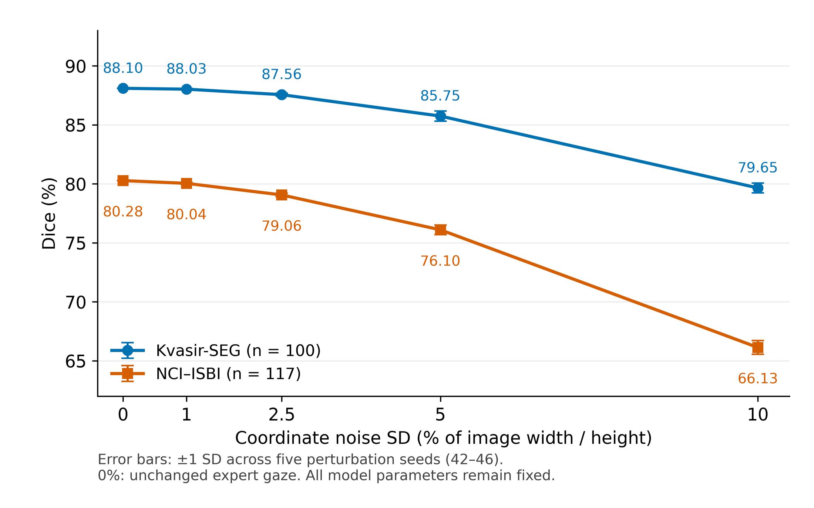

Build the gaze prior
Convert fixation locations and relative durations into a Gaussian spatial map.
GazeRefine turns sparse expert fixations into anatomical masks, using frozen visual features and inference-time prototype refinement.
MICCAI 2026 Workshop paper · Journal extension in preparation

1 Université Sorbonne Paris Nord 2 Northwestern University 3 VSB–Technical University of Ostrava
* Corresponding author
What does expert gaze contribute beyond a spatial prior? We use fixation-derived foreground and background prototypes to organize frozen DINOv3 features directly at test time. Controlled experiments separate image-matched gaze, fixation-duration weighting, background contrast, and feature-affinity propagation. Further analyses examine partial scanpaths and coordinate noise. The segmentation framework requires no target-task gradient updates, learned adapters, or segmentation prompt encoder.
Read the original workshop paper on arXiv ↗Fixations guide the initial prototypes. Image features extend the response beyond the directly observed region.
Convert fixation locations and relative durations into a Gaussian spatial map.
Construct foreground and complementary background prototypes from DINOv3 patch tokens.
Separate foreground from background, propagate along feature affinities, and anchor refinement to gaze.

Paired gaze conditions, fixed image subsets, and unchanged inference settings.
Dice · duration-weighted expert gaze
Dice · duration-weighted expert gaze
Removing contrast reduces Dice to 27.89% and 20.68%, respectively.
| Gaze condition | Kvasir-SEG | NCI–ISBI |
|---|---|---|
| Expert · duration-weighted | 88.10 | 80.28 |
| Expert · equal weights | 87.75 | 80.62 |
| Center prior | 36.47 | 41.13 |
| Shuffled expert gaze | 36.72 | 51.25 |
Reported subset scores are retrospective benchmark results, not estimates of clinical performance. NCI–ISBI uses a fixation-available 117-slice evaluation subset; see the manuscript for selection details. Broader evaluation: 1,000 Kvasir-SEG images and 789 NCI–ISBI slices, with Dice of 89.49% and 76.53%, respectively.
Independent Gaussian coordinate perturbations, four noise levels, five seeds. Error bars show variation across seed-level means.

Examples from the original paper on polyp and prostate segmentation.
A local CPU workflow for images, gaze capture, and mask export. GPU hardware is optional.
Open images or a DICOM slice. Import fixation CSVs, place manual prompts, or connect an optional EyeTrax webcam / Tobii Pro adapter.
python -m desktop.appUse the same CPU segmentation engine in your browser, with optional RealEye webcam calibration and gaze capture.
python scripts/serve_app.py384 / 592 px are interactive previews; 1184 px is the full-resolution option. Preview masks are not the published benchmark results. Webcam tracking requires calibration and is not equivalent to expert gaze collected with a research eye tracker. This research prototype has not been clinically validated.
git clone --branch codex/project-site-cpu-desktop https://github.com/MohammedOussamaBEN/GazeRefine.git
cd GazeRefine
python -m pip install -r requirements-app.txt
python -m desktop.app@article{benyahia2026gazerefine,
title = {GazeRefine: Expert Gaze as a Test-Time Prompt for
Training-Free Medical Image Segmentation},
author = {Benyahia, Mohammed Oussama and Tliba, Marouane and
Kerkouri, Mohamed Amine and Yousra, Taifour and
Wang, Bin and Bengtsson, Max and Durak, Gorkem and
Keles, Elif and Ming, Zuheng and Penhaker, Marek and
Beghdadi, Azeddine and Bagci, Ulas and Chetouani, Aladine},
journal = {arXiv preprint arXiv:2609.01310},
year = {2026},
doi = {10.48550/arXiv.2609.01310}
}